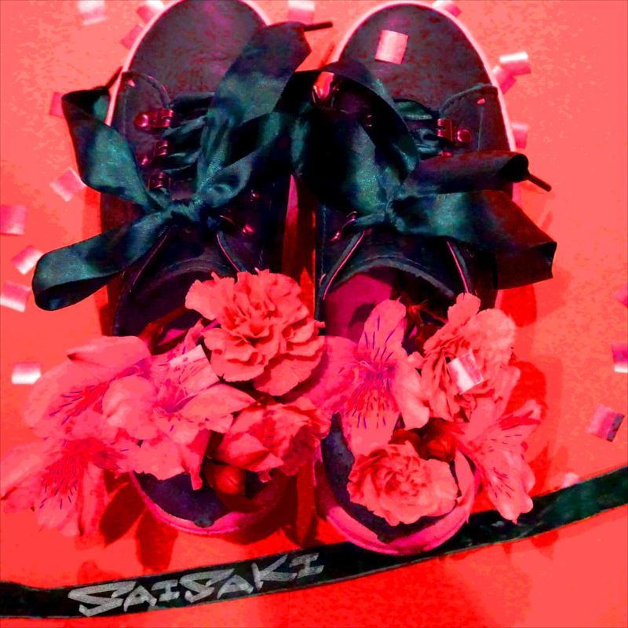

Albums

Sixth Sense 12/15/2021

Pyramid 01/22/2020
Virtually 10/17/2018

Kyokohsyu 03/14/2018

Sigma 10/19/2016

No Title- 03/18/2016

Gokusaishiki 07/29/2015
EPs

Sixth Sense(EP) 07/29/2020
Civilization 03/20/2019

Endless 10/11/2017
Digital Singles

Midnight sun 07/28/2021

Q? 11/04/2020

HYPE MODE 10/20/2019

Phanto Meet 07/24/2019

SAIREN 07/17/2018
- 
Saisaki 05/16/2018
plane mirror 01/09/2018